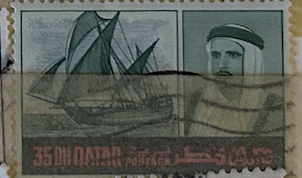
| SOURCE | TITLE| IMAGE MATCH | click to source page |
| lastdodo.com | Arab dhow sailboat 35 (1968) - Qatar - LastDodo | 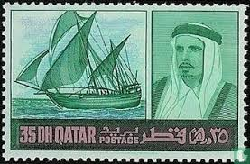 |
| JF-Stamps | 1968 QATAR Ahmed bin Ali al Thani 35 DH Never hinged 1968 Qatar | 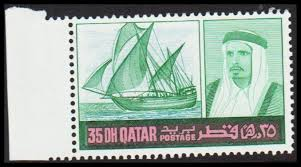 |
| Avion Thematics | Mozambique Company 1925-31 Copra 30c Black & Emerald Fine Cto Used, SG 225*, stamps on copra;coconuts;food, stamps on oil , stamps on | 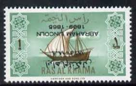 |
| eBay | Ras al Khaima 1971 POSTALLY USED Mi.C528 III, Freimarke Schiff Dhau [sv3595] | eBay | 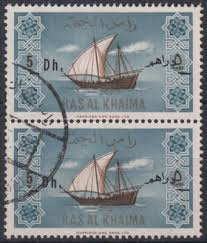 |
| eBay | Ship & Boat Postal Stamps for sale | eBay | 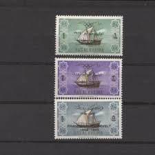 |
| eBay | Ships, Boats Kuwaiti Stamps (1961-Now) for sale | eBay | 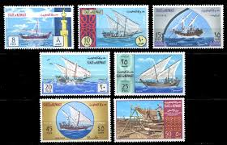 |
| Smithsonian Institution | United Arab Emirates | National Postal Museum | 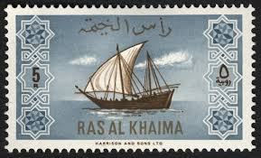 |
| eBay | Isa | eBay | 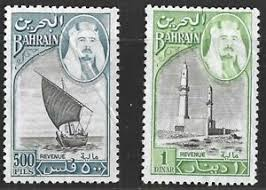 |
| eBay | Ships, Boats Bahraini Stamps (1971-Now) for sale | eBay | 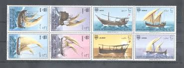 |
| eBay | VG/F (Very Good/Fine) Qatari Stamps for sale | eBay | 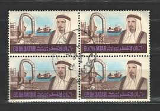 |
| Miraheze | Ras al Khaima - Stamp Encyclopedia | 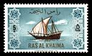 |
| postbeeld.com | Stamp 1970, Kuwait Ships 7v, 1970 - Collecting Stamps - PostBeeld - Online Stamp Shop - Collecting | 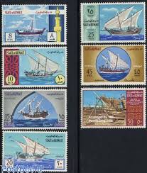 |
| lastdodo.com | Stamps from Ras al-Khaimah Stamp catalogue - LastDodo | 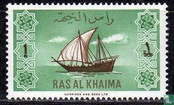 |
| Colnect | Stamp: Sheikh Ahmad bin al-Thani (Qatar(The 1961 Definitive Issue) Mi:QA 32,Sn:QA 32,Yt:QA 32,Sg:QA 33 📮 | 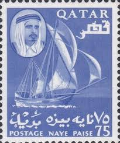 |
| Stamp Community Forum | The Stamps And Labels Of Ras AL Khaima. - Page 2 - Stamp Community Forum | 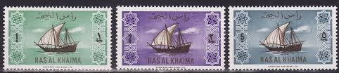 |
| eBay | Postal History United Arab Emirates Stamps for sale | eBay | 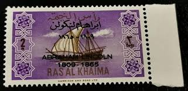 |
| eBay | Al Kuwait | eBay | 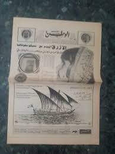 |
| eBay | Ships, Boats United Arab Emirates Stamps for sale | eBay | 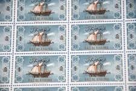 |
| ProBoards | Ras Al Khaima Stamps : | The Stamp Forum (TSF) | 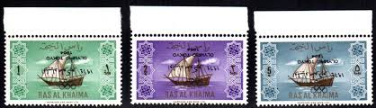 |
| eBay | Bahraini Stamp Blocks (1971-Now) for sale | eBay | 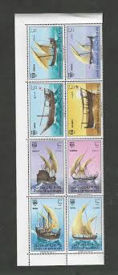 |
| Maps on Stamps | Maps on Stamps : Gulf Cooperation Council | A Database of Cartophilately | 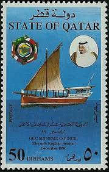 |
| WorthPoint | 1969 Airmail cover - QATAR to UK - Doha-3 postmark | #466558668 | 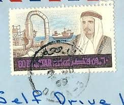 |
| Colnect | Stamp: Dhow (Kuwait(Definitives (1958-59)) Mi:KW 136,Sn:KW 146,Yt:KW 134,Sg:KW 137 📮 | 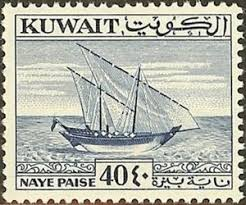 |
| eBay | Ras al Khaima 1971 POSTALLY USED Mi.C528 II+III, Freimarke [sv0432] | eBay | 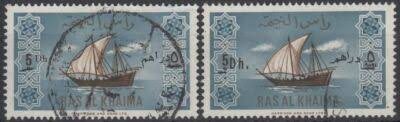 |
| Freestampcatalogue.com | Stamps from Ras al-Khaimah - Freestampcatalogue.com - The free online stampcatalogue with over 500.000 stamps listed. | 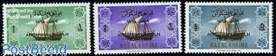 |
| Numista | 1 Dinar - South Arabia – Numista | 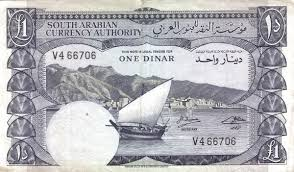 |
| eBay | Qatar 1966 New Currency 5r Surcharge or 5r Bronze-Green | eBay | 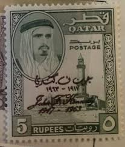 |
| 670 Stamps: Ships ideas | postage stamps, stamp collecting, stamp | 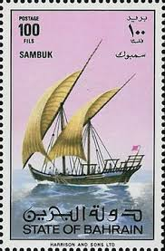 | |
| Colnect | Stamp: Bakkara (Kuwait(Kuwait Sailing Dhows) Mi:KW 482,Sn:KW 486,Yt:KW 474,Sg:KW 485 📮 | 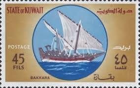 |
| eBay | Bahrain Revenue for sale | eBay | 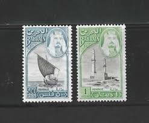 |
| lastdodo.com | Stamps from Qatar Stamp catalogue - LastDodo | 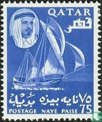 |
| eBay | Ships, Boats Qatari Stamps for sale | eBay | 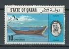 |
| Ships on Stamps Unit | Maritime Topics on Stamps, Zheng He voyages with the treasure ships | 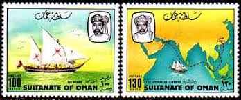 |
| Colnect | Stamp: Ghanja (Bahrain(Dhows in the Arabian Gulf) Mi:BH 287,Sn:BH 263,Yt:BH 280,Sg:BH 261 📮 | 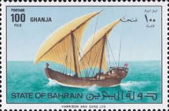 |
| eBay | Ras al khaima 1965 three opt stamps,MNH r2072 | eBay | 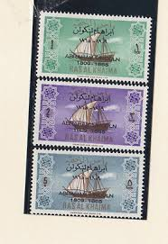 |
| eBay | Gulf 25 rials 1962 ND - Copy | eBay | 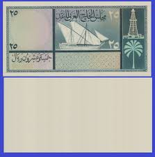 |
| lastdodo.com | Stamps from Ajman - Manama Stamp catalogue - LastDodo | 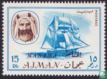 |
| eBay | USED 75 NP Blue " EMIR OF QATAR " 1961, QATAR | eBay | 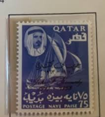 |
| eBay | Kuwait Old Banknote 10 Dinar 1968 P10 Emir Abdullah aXF Crisp Rare Grade | eBay | 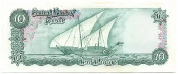 |
| BalkanPhila | 1957 Bahrain 40np on 6d NHM Block 24 – BalkanPhila | 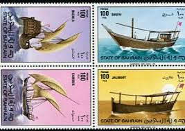 |
| delperdange.be | Catalogues | 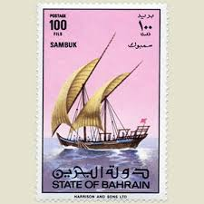 |
| BalkanPhila | 1976 Qatar Dhows NHM Set – BalkanPhila | 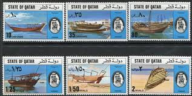 |
| Avion Thematics | Guernsey 1984-91 Booklet Pane Of 10 (4 X 4p, 3 X 12p, 3 X 16p) From Bailiwick Views Def Set Unmounted Mint, SG 299c, stamps on tourism | 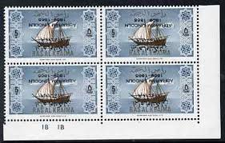 |
| Wikipedia | ملف:Stamp of Ras al-Khaimah-1965-Arabian-Sailing-Ship-Dhow-abraham-lincoln-5rupee.jpg - ويكيبيديا | 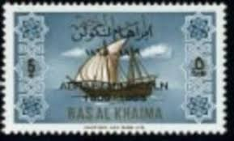 |
| Colnect | Stamp: Kotia (Bahrain(Dhows in the Arabian Gulf) Mi:BH 288,Sn:BH 270,Yt:BH 278,Sg:BH 262 📮 | 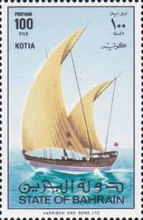 |
| eBay | Used Postage Omani Stamps for sale | eBay | 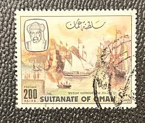 |
| kuwait philatelic | Coil Stamp 100 fils ,Dhow , Boat 2001 - KUWAIT PHILATELIC | 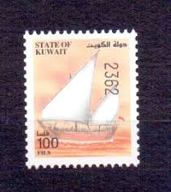 |
| eBay | Individual Bahraini Stamps for sale | Shop with Afterpay | eBay Australia | 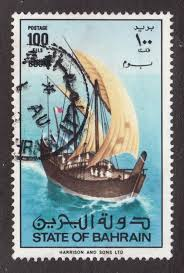 |
| eBay | PMG Banknote Kuwaiti Paper Money for sale | eBay | 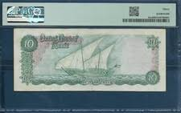 |
| lastdodo.com | Sailing ship and derrick 75 (1961) - Kuwait - LastDodo | |
| HipStamp | Ras Al Khaima 1965 Ships 1r with Abraham Lincoln overprin... | Middle East - United Arab Emirates, Stamp / HipStamp | |
| Catawiki | Złoty Banknotes. Buy unique objects. Now at auction for sale | Catawiki | |
| BalkanPhila | 1998 Qatar Pearl Diving Set + Block – BalkanPhila | |
| Colnect | Stamp: Dalil Almohtar Fi Alaam al-Bihar (boat), 1923. (Kuwait(Cultural History) Mi:KW 1535,Sn:KW 1378o,Yt:KW 1444,Sg:KW 1544 📮 | |
| HipStamp | Bahrain # 263-270, Dhows of the Arabian Gulf, NH, 1/2 Cat. | Middle East - Bahrain, General Issue Stamp / HipStamp | |
| TouchStamps | Issue: Country Craft Industry (Kuwait, 1970) - TouchStamps | |
| TouchStamps | Stamp: Voyages of Sinbad the Sailor (Oman 1981) - TouchStamps | |
| ProBoards | Oman : The Sultanate of Oman : | The Stamp Forum (TSF) | |
| Show your stamps depicting Sailing Ships of Yesteryear - Page 14 - STAMPBOARDS - Postage Stamp Chat Board and Stamp Forum |
{kind=link}